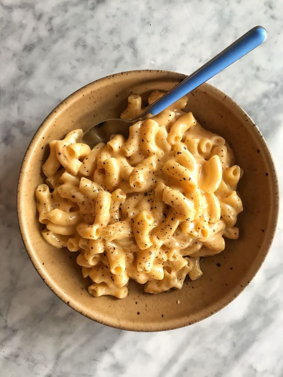

Mac and Cheese

Description
Macaroni and cheese is known around the world as a classic, quick meal for kids. However, this is not the
powdered cheese version you will find at the store.Instead, this recipe is made entirely from scratch to produce
the creamiest, cheesiest pasta around. The whole family is sure to love it!
Making homemade mac and cheese is actually quite easy once you know how to prepare the perfect cheese sauce.It’s
not difficult, but you do need to keep a few tips in mind to get a creamy, cheesy, and smooth sauce.
Ingredients:
For Cooking Macaroni:
- 1 cup elbow macaroni or shell pasta – 100 grams
- 4 cups water or about 1 litre
- ½ teaspoon salt
For Cheese Sauce:
- 3 tablespoons Butter – unsalted
- 2 tablespoons all-purpose flour
- 2 cups milk – cold or chilled
- ½ teaspoon crushed black pepper or as required
- 1 to 2 pinches grated nutmeg or ground nutmeg powder
- 1.25 cups cheese – shredded, mix of cheddar, mozzarella, and gouda cheese or any cheese or 150 grams
- ⅛ teaspoon salt or as required
For Breadcrumb Mixture:
- 1 teaspoon Butter – melted, unsalted
- ⅓ cup breadcrumbs
Steps:
-
Measure out 1 cup macaroni (a.k.a. elbow pasta), (100 grams or 3.5 ounces).
-
Boil the pasta in salted water per package instructions. I used 4 cups water, plus ½ teaspoon salt.
-
Cook the pasta until it is al dente, meaning just cooked with still a bit of a bite. You don’t want it to
get too soft or mushy.
-
Drain the pasta using a colander or strainer.
Make Cheese Sauce
-
Heat 3 tablespoons butter in a thick-bottomed saucepan over a low flame.
-
The butter should be well heated, with a frothy, bubbly surface.
-
Then add 2 tablespoons of all-purpose flour.
-
Whisk the flour into the butter as soon as you add it. Act quickly here!
-
Keep on stirring so that lumps do not form.
-
The frequent stirring helps the flour to cook evenly.
-
You will see the flour frothing and bubbling up while stirring.
-
Sauté the flour until you get a nice, nutty aroma from it and the mixture is a pale golden color.
Don’t over-brown the roux here, or you’ll risk it tasting bitter.
-
Keep the heat to the lowest setting. While continuously whisking, pour the milk in a gentle stream.
-
Stir frequently while the milk warms and heats up.
-
The sauce will begin to thicken, so continue to stir often.
-
When the sauce has thickened well, turn off the heat. A test is that the sauce should coat the back
of a spoon.
-
Remove the saucepan from the heat and wait for a minute. Then add 150 grams (5.3 ounces) of your
favorite shredded cheese.
-
Again mix and stir so that the cheese melts.
- The cheese needs to melt well in the hot white sauce (bechamel sauce). This is what will turn your white sauce into a smooth, creamy cheese sauce known as mornay.
- Add ⅛ to ¼ teaspoon crushed black pepper and a pinch or two of grated nutmeg or nutmeg powder.
- Add salt to taste.
- Stir again.
Assembly Part I: Simply Mix
- Now add the pasta to the cheese sauce.
- With a spoon, mix thoroughly. The sauce should coat all of the macaroni very well.
- Feel free to stop here! The macaroni and cheese is done and ready to serve. However, if you’d like to bake it before serving, proceed to the next step.
Assembly Part II: Bake Mac and Cheese
- Pour the prepared mac and cheese into the greased pan.
- Top evenly with the breadcrumbs and melted butter mixture.
- Now sprinkle 2 to 3 tablespoons of the remaining shredded cheese on top.
- Sprinkle some crushed black pepper on top of the cheese.
- Bake in a preheated oven at 390 degrees Fahrenheit (200 degrees Celsius) for 15 to 20 minutes until the cheese melts and the mac and cheese is bubbly and hot. Be sure to check while baking as oven temperatures vary.
- Remove from oven and let stand for 5 minutes. Then serve baked mac and cheese hot.